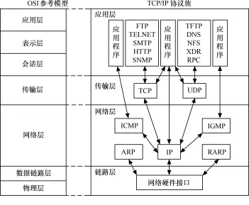

TCP状态转换
一、概述
TCP与UDP属于传输层的基础协议，在实际的应用中，我们使用到的也就是传输层及传输层以上的协议，其他的底层协议，一般都是以了解基础协议原理即可。
二、TCP与UDP
1、协议的联系
为了减少协议设计的复杂性，大多数网络模型均采用分层的方式来组织。每一层都有自己的功能，就像建筑物一样，每一层都靠下一层支持。每一层利用下一层提供的服务来为上一层提供服务，本层服务的实现细节对上层屏蔽。

2、TCP与UDP
2.1 定义
一般来说，若是对两者协议进行定义，有个经典的归纳：
TCP通信：
面向连接的，可靠的数据包传输。
UDP通信：
无连接的，不可靠的报文传递。
2.2 对协议进行理解
为什么会出现上述的定义呢，这是由于两者本身的特点决定的。
TCP有这么两个特点：
- 发送数据前必须建立连接，建立链接后，发送数据的路线确定；
- 发送完数据需要有ACK回执包，否则将进行重发；
TCP在网络上对现有的环境，对不稳定的网络层做完全弥补操作，保证数据传输稳定。
UDP，靠路由网络分发，无需提前建立连接，只需知道目标机器的IP地址，发送的路线不确定。对不稳定的网络层，不作为。
2.3 比较
| TCP | UDP |
|---|---|
| 面向连接 | 面向无连接 |
| 要求系统资源较多 | 要求系统资源较少 |
| TCP程序结构较复杂 | UDP程序结构较简单 |
| 使用流式 | 使用数据包式 |
| 保证数据准确性 | 不保证数据准确性 |
| 保证数据顺序 | 不保证数据顺序 |
| 通讯速度较慢 | 通讯速度较快 |
TCP：对数据传输安全性、稳定性要求较高的场合。 网络文件传输。下载、上传。
UDP：对数据实时传输要求较高的场合。视频直播、在线电话会议。游戏。
3、TCP状态转换
由于TCP在通信时，有连接动作，这个动作并不是一个单一的动作，而是一连串动作的集合，也就是TCP中经典的三次握手，四次挥手。

连接过程经历的状态变化：
关闭连接时的状态变化：
那为什么是三次握手和四次挥手呢？
在实际的通信中，三次握手阶段的第二次的通信中，被动接收端是将ACK与SYN包一起发送给主动发起连接端，也就省去了一次过程。那为什么会合并呢，这个问题也可以问，为什么挥手的过程不是合并发送呢？
我的理解是关闭过程是各自关闭各自的发送功能，也就是：你关闭你的发送通道，我关闭我的发送通道。
而握手阶段，若接收端没有准备好，则ACK包都不会回复。
可以参考这张图，更为详细的了解状态间的变换。

4、TCP沾包
以下转载自：TCP 粘包问题浅析及其解决方案
如下图所示，出现的粘包问题一共有三种情况：
第一种情况： 如上图中的第一根bar所示，服务端一共读到两个数据包，每个数据包都是完成的，并没有发生粘包的问题，这种情况比较好处理，服务器只需要简单的从网络缓冲区去读就好了，每次服务端读取到的消息都是完成的，并不会出现数据不正确的情况。
第二种情况： 服务端仅收到一个数据包，这个数据包包含客户端发出的两条消息的完整信息，这个时候基于第一种情况的逻辑实现的服务端就蒙了，因为服务端并不能很好的处理这个数据包，甚至不能处理，这种情况其实就是 TCP 的粘包问题。
第三种情况： 服务端收到了两个数据包，第一个数据包只包含了第一条消息的一部分，第一条消息的后半部分和第二条消息都在第二个数据包中，或者是第一个数据包包含了第一条消息的完整信息和第二条消息的一部分信息，第二个数据包包含了第二条消息的剩下部分，这种情况其实是发送了 TCP 拆包问题，因为发生了一条消息被拆分在两个包里面发送了，同样上面的服务器逻辑对于这种情况是不好处理的。
为什么会发生 TCP 粘包、拆包
- 应用程序写入的数据大于套接字缓冲区大小，这将会发生拆包。
- 应用程序写入数据小于套接字缓冲区大小，网卡将应用多次写入的数据发送到网络上，这将会发生粘包。
- 进行 MSS （最大报文长度）大小的 TCP 分段，当 TCP 报文长度-TCP 头部长度>MSS 的时候将发生拆包。
- 接收方法不及时读取套接字缓冲区数据，这将发生粘包。
如何处理粘包、拆包
通常会有以下一些常用的方法：
- 使用带消息头的协议、消息头存储消息开始标识及消息长度信息，服务端获取消息头的时候解析出消息长度，然后向后读取该长度的内容。
- 设置定长消息，服务端每次读取既定长度的内容作为一条完整消息，当消息不够长时，空位补上固定字符。
- 设置消息边界，服务端从网络流中按消息编辑分离出消息内容，一般使用‘\n ’。
- 更为复杂的协议，例如楼主最近接触比较多的车联网协议 808,809 协议。
另外解决方法还可以看程序前辈怒怼TCP，看着很搞笑，FUCK_TCP。
彻底解决 TCP 粘包和拆包问题的代码架构如下：
1 | char tmp[]; |
三、TCP TIME_WAIT的详解
系统调优，你所不知道的TIME_WAIT和CLOSE_WAIT
前面我们知道了TIME_WAIT出现的时机，TIME_WAIT有何用呢？
如果我们来做个类比的话，TIME_WAIT的出现，对应的是你的程序里的异常处理，它的出现，就是为了解决网络的丢包和网络不稳定所带来的其他问题：
一个连接【五元组，我们继续以 180.172.35.150:45678, tcp, 180.97.33.108:80 为例】上延迟的数据包或者丢失重传的数据包，被后面复用的连接【前一个连接关闭后，此时你再次访问百度，新的连接可能还是由180.172.35.150:45678, tcp, 180.97.33.108:80 这个五元组来表示，也就是源端口凑巧还是45678】错误的接收（异常：数据丢了，或者传输太慢了）
第二，确保连接方能在时间范围内，关闭自己的连接。
强烈建议看原博客，此处就不摘抄全部记录了。
本文标题：TCP状态转换
文章作者：小师
发布时间：2019-06-10
最后更新：2022-05-04
原始链接：chunlife.top/2019/06/10/TCP状态转换/
版权声明：本站所有文章均采用知识共享署名4.0国际许可协议进行许可